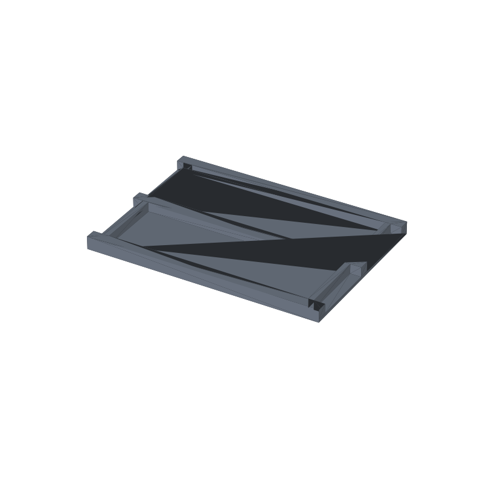

Sharpening stone holder STL, dual channel cradle
Loose whetstones slide around the bench. Commercial holders want a specific brand of stone, and two-stone setups mean two holders, two footprints, and two things to knock over mid-stroke. This cradle prints as one flat piece with two channels side by side on a shared base: drop the coarse stone in one, the fine stone in the other, and the pair stays together on the bench until you lift one straight out.
The fit is on purpose loose: 0.4 mm of width slack per side and 3.0 mm of length slack per end, so a stone drops in without wedging even when the actual stone runs a hair oversize. The stones sit on the base plate and poke 6 mm above the rails, which is the knuckle room you want when the stroke comes down toward the edge. Five-millimeter end blocks at both ends of each channel stop the stone from walking along its length.
Both channels are independent parameters in the generator, so a 180 × 60 coarse plate next to a smaller fine stone is three numbers, not a redesign. This page carries the measured spec sheet: dimensions taken from the mesh, the channel-by-channel clearance check by ray test, and preview renders, so you can check the sizes before you slice.

The STL is one material and prints in one color; the renders shade the walls by light angle so the channels and end blocks read as geometry, not paint.
Spec sheet, measured from the mesh
| Spec | Value |
|---|---|
| As exported | One solid body, no assembly; 216.0 × 151.6 × 12.0 mm overall with 8 mm rounded corners on the base footprint |
| Channels | Two, side by side along the length, each 60.8 mm wide and 196 mm long overall between the outer rails; channel floor is the base plate top at 3 mm |
| Stone fit | Default stone 180 × 60 × 15 mm; 186 mm of open length between the end blocks (3.0 mm slack per end), 60.8 mm of width against a 60 mm stone (0.4 mm slack per side) |
| Rails | Three rails 10 mm wide, tops at 12 mm; rail walls stand 9 mm above the channel floor, so the stone sinks 9 mm into the channel and rides 6 mm above the rails |
| End blocks | 5 mm wide blocks at both ends of each channel, full channel width; they stop the stone walking lengthwise during strokes |
| Base | 3 mm thick, full rounded footprint, flat bottom so the holder wipes clean on the bench |
| Volume | 167.5 cm³ solid, about 208 g of PLA if printed solid; less at typical infill |
| Print time | About 3-4 hours, PLA, 0.4 nozzle, 0.2 mm layers; a geometry estimate, not a measured print |
| Mesh check | Watertight, winding consistent, euler 2, 128 faces; the 3MF carries one named solid body (trimesh 5.1.0, 2026-09-10) |
| Files | STL (6.5 KB) and 3MF (2.2 KB) plus the parametric generator script |
| License | CC-BY 4.0 on the MakerWorld upload; royalty free, no AI training, direct from us |
How the channel fit was checked
The clearances came off the exported mesh, not the parameter sheet. Ray tests through the solid confirmed the geometry both ways: points in the clearance gaps around a nominal centered stone are open air, and points in the end blocks, rails, base floor and mid rail are solid. The measured open spans agree with the generator: 60.8 mm of channel width at both channel midlines, and 186 mm of open length between the 5 mm end blocks.
What the numbers mean in the hand: the 0.4 mm per side lets a stone drop in with no rocking on flat rails, the 3.0 mm per end leaves room to lift a fingertip under the stone nose, and the 6 mm of stone above the rail tops is the knuckle clearance for a flattening stroke that runs off the stone edge. Because the channel floor is the base plate top, the stone seat is as flat as your print bed.
Every wall in this part is vertical and every surface is either flat on the plate or a vertical extrusion, so nothing needs supports and there are no bridges. The channels open from the top and never close over, so even a sloppy first layer does not capture anything.
Print notes
Print the part as exported, flat on the plate, no supports and no brim beyond what your plate adhesion needs. The part is one body, so any slicer shows a single object; 0.2 mm layers and three perimeters are a reasonable default, and the 3 mm base is thin enough that a solid base layer is standard.
I have not test-printed this one yet. If you print it, post a make and tell me how the fit came out with your stones; the tuning knobs are in the generator. CLR_W (0.8 mm total) widens or tightens the side fit, and CLR_LEN (3.0 mm per end) sets the lengthwise play. Measured stones first: nominal sizes drift, and the fit is generous enough that a caliper check beats a guess.
The generator (gen_whetstone22.py) takes the stone length, width and thickness per channel, both clearances, rail height fraction, rail width, end block width and base thickness as parameters. The rail height follows the thickest stone in the pair, so mixed-size pairs keep the right knuckle clearance on both channels.
Honest limits
The 3-4 hour figure is a geometry estimate from the mesh, not a timed print, and the clearances are mesh-verified but untested on a printer. The fit risks are ordinary: a stone at the wide end of its tolerance plus a first layer that squashes 0.2 mm can eat most of the 0.4 mm side slack. If a stone binds, bump CLR_W to 1.0 and reprint; the part is small enough that a redo is cheap.
PLA is fine for a bench holder that lives indoors, but a car dashboard or an unshaded windowsill in summer can creep it. For a shop that lives in a hot space, print the same generator output in PETG.
The channels hold stones that actually measure close to nominal. Kitchen steels, skinny pocket stones and oversized 220 mm plates are outside the default; the generator takes the per-channel sizes, but a stone 40 mm wider than the base is a redesign, not a parameter.
Where to get the files
The stone holder is staged on our MakerWorld account and goes public on our profile once it is submitted and clears review.
More printed organizers and bench tools, with a status table for the pool: 3D printed desk organizers and printable tools. The rebuild-everything approach, generator parameters per model side by side: parametric 3D printed tools.
Compare all 20 models by solid mesh volume in the STL volume ledger.
FAQ
Why two channels on one base instead of two separate holders?
One base is one footprint to place, one thing to pick up when you clear the bench, and the coarse/fine pair stays together so you actually follow the grit progression instead of grabbing whichever stone is closest. The channels are cut full length, so each stone still lifts straight out when you want just one.
My stones are not 180 × 60 × 15. Can I still print this?
Measure the stones, then set the STONE list in the generator: length, width and thickness per channel, and the two channels can differ. Rail height scales with the thickest stone so both keep knuckle clearance, and the footprint grows or shrinks to fit. If a stone pair is wildly different in width, the rails stay a fixed 10 mm, so the only cost of mismatch is a wider part.
Does it survive water stones?
PLA does not care about a splash or a soaked stone; dry the holder with the stones and it lives. What PLA does not survive is heat, so keep it off radiators and out of hot cars. The base is solid and flat, so wiping slurry out of the channels is a cloth pass, no corners to dig in.